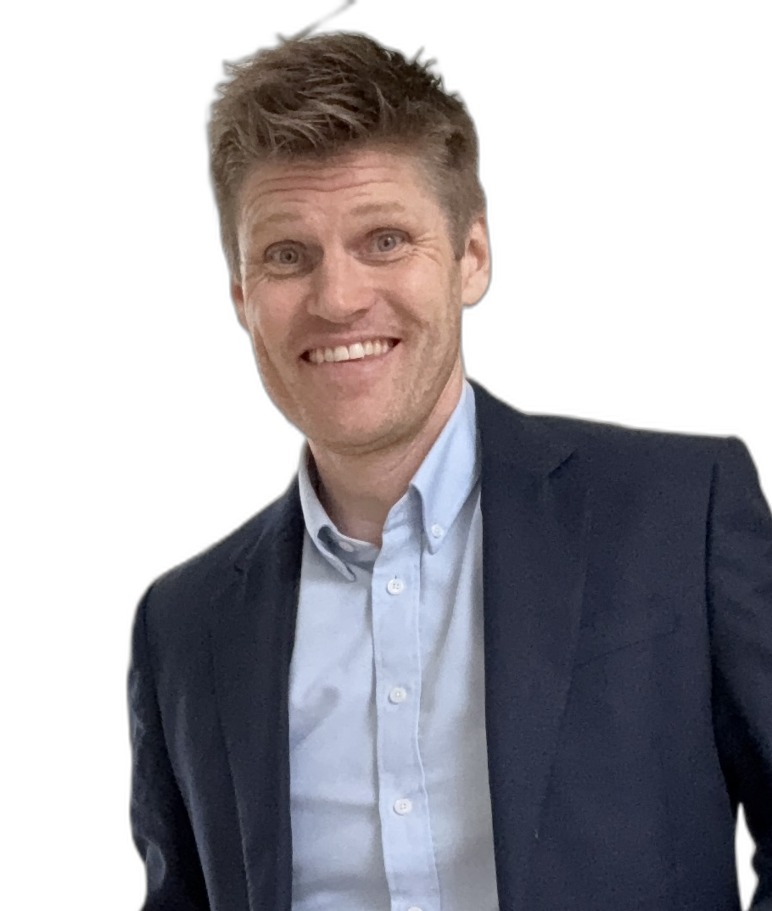

Kiil Management
Ambitiøs transformationsleder med +15 års erfaring i at drive strategisk forandring på tværs af energisektoren. Fra fossilt fundament til grøn fremtid — jeg kender vejen.

Om mig
Med mere end +15 års erfaring fra energisektoren — fra Statoil Fuel & Retail over Energinet, Evida og Norlys til min tid i Ramboll Management Consulting — har jeg arbejdet i krydsfelt mellem strategi, forretning, IT og transformation i både regulerede og kommercielle miljøer.
Jeg er overbevist om, at det at omsætte strategi til virkelighed og samle interesser og målsætninger i ét integreret, prioriteret roadmap på tværs af organisationen kræver en solid baggrund fra konsulentbranchen og store energiselskaber. Jeg kombinerer en stærk faglig værktøjskasse med evnen til at skabe fælles retning og fremdrift på tværs af interessenter.
Mit lederskab skaber fremdrift gennem mennesker. Det er her, jeg adskiller mig — jeg er pragmatisk, empatisk og ambitiøs og trives, når organisationen bevæger sig sammen mod et fælles mål.
Energisektorens transformation
Strategi & værdirealisering
Tværorganisatorisk ledelse og fremdrift
Porteføljestyring og governance
Program og forandringsledelse
ESG-strategi og bæredygtighed
Erfaring
2025 – nu
Senior Manager, Strategy & Organisational Transformation
Ramboll Management Consulting
2022 – 2025
Senior Manager, Strategy & Transformation
Norlys
2020 – 2022
Manager, Strategic Sustainability Consulting
Ramboll Management Consulting
2019 – 2020
Chefmarkedsudvikler (Chefkonsulent)
Evida
2017 – 2019
Senior Business Advisor
Dansk Gas Distribution
2015 – 2017
Senior Markedsudvikler
Energinet
2011 – 2015
Detailmarkedsudvikler
Energinet
2007 – 2011
European Business Advisor
Statoil Fuel & Retail
2006 – 2007
Projektleder og forretningsudvikler
Artlinco
Kontakt
Er du interesseret i et samarbejde om strategisk transformation, forandringsledelse eller energisektoren? Kontakt mig direkte.